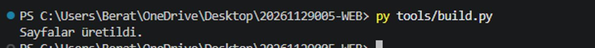

1. Write the request clearly
The clearer you describe what you want, the better the AI does. I first wrote the assignment requirements one by one (TR/EN, a separate title and description per page, mobile support, SEO), then described my vision: waking up in a skyscraper room and exploring it. Keeping requirements and vision apart made it easier to check and to correct.
2. Generate many pages from one source
I generate all 12 pages (6 TR, 6 EN) from a single Python file, build.py. I write texts bilingually so translations never drift apart:
t("Hakkımda", "About")
py tools/build.py # tr/ ve en/ sayfalarını yeniden üretir
tools/build.py.
My advice: don't edit generated files by hand. The next build overwrites them all.
3. Think about performance from the start
3D scenes can easily lag. Computing shadows once, doing heavy work up front and choosing a quality level by graphics card all helped. Adding ?perf=1 to the address shows fps and draw calls, so I measure instead of guessing.
4. Use checklists
I added five skills to the project: frontend-design, ui-ux-design, seo-optimization, accessibility and code-review. Each works like a checklist, checking things like duplicate titles and descriptions, keyboard access and lag risks after every change.
My tips
- Write the requirements first, then dream.
- Run and check by eye after every change; AI makes mistakes too.
- Work in small steps and back up regularly.
- Measure performance, don't guess.
- Don't leave accessibility for last.